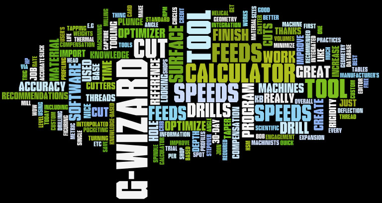

|
10 Things the G-Wizard Feeds and Speeds Calculator Does For CNC Professionals
Many machinists don’t think they can use a feeds and speeds calculator. They’re satisfied they can figure out feeds and speeds by ear, by following manufacturer’s recommendations, by simple rules of thumb, with a spreadsheet, or by doing what they’ve always done. But a lot has changed over the years and you can do a lot better. Let us show you how.
|
1. Simplifies a Complex Process to Save Time
If you’ve tried to figure out the best feeds and speeds by applying everything the tooling manufacturers tell you, you’ll know it is a complex process. There are lots of tables of information for each type of cutter. Adjustments need to be made for deep holes, wide cuts, thin cuts, deep cuts, and probably even the phase of the moon.
G-Wizard has a feature called CADCAM Wizard that radically simplifies all this. Just give it a little bit of information such as material and your machine's parameters (set that up once) and then the basics about your feature:
- How deep is that pocket?
- What is the minimum inside corner radius?
CADCAM Wizard will then crank out an optimal recipe you can take back to your CAM program to decide how best to machine that pocket or other feature.

|

See CADCAM Wizard in Action...
|
2. Minimizes Tool Deflection.
Tool deflection is a fact of life, especially for smaller tools and situations where the tool has to stick far out of the tool holder. It leads to inaccuracy, chatter, and sharply reduced tool life. But what kind of help do you have avoiding it?
For most machinists, there is none. They choke up as much as they can on the cutter and hope for the best. G-Wizard solves the complex mathematics needed to calculate tool deflection for every case. Even better, it will tell you exactly how deep or wide your cut can be and stay within tool deflection limits.
|
|
3. Calculates Feeds and Speeds for HSM and Plunge Roughing Toolpaths
It's tough to get feeds and speeds for the latest toolpaths.
Constant engagement HSM toolpaths have revolutionized machining productivity. But, until now, HSM feeds and speeds have been a black art. You went with something similar to what someone else learned through trial and error. If you break a tool, well, back off and try again. No idea whether you’re near the optimal limits, but it looks like its going fast enough so keep at it.
Plunge Roughing is another technique that’s making a huge difference for many shops. This technique takes advantage of the fact many machines a far more rigid in the plunge direction than when milling parallel to the table. Like HSM, the feeds and speeds calculations are much different than traditional “classroom” feeds and speeds.
G-Wizard will calculate HSM Feeds and Speeds so you can take the guesswork out of it. We've got plunge roughing feeds and speeds covered too.
|
|
4. Tips and Techniques Suggestions
Have you noticed how many great tips a good Tooling Catalog passes along? If the hole depth is greater than X, use a parabolic flute twist drill. If the cut width is greater than Y, use conventional milling instead of climb milling. Don’t make stepover exactly half the cutter diameter. Those are just a few of the many tips G-Wizard will suggest to you if it sees you’re about to do one of those things. Why not have an expert keeping an eye out for you?
|
 |
5. Micromachining Expertise
Do you use cutters that are less than 1/8” (3mm) in diameter? If so, welcome to the world of micromachining. Cutters are extremely delicate here, tool deflection is much more noticeable, and to make matters worse, a lot of the physics and geometry are subtly different. If you try diving in with the same approach that worked with larger cutters, you’re in for a lot of trial and error.
G-Wizard uses a completely different set of feeds and speeds algorithms based on work done by some of the major machinery manufacturers to determine its recommendations when micromachining.
|
|
6. Dealing With Tool Geometry
So many different shapes: ballnose, toroid/button cutters, v-bits, dovetails, corner rounding, chamfering, and many more. G-Wizard has a first class geometry module to determine what to do with each of these.
|
|
7. Help With Chatter
When you have a job that chatters, you know you’ve got a problem that has to be fixed. Letting chatter go unchecked will ruin tool life, ruin surface finish, and generally keep your machine and jobs from reaching their potential.
G-Wizard has a chatter calculator to help you find spindle speeds that minimize the resonances. It also has a Knowledge Base of the cuts you’ve made to help you track the combinations of cutting parameters that lead to dangerous zones of chatter and avoid them completely.
|
|
8. Knowing How to Exceed the Speed Limit
Given the right conditions, it’s almost always possible to exceeds the manufacturer’s recommended feeds and speeds. After all, they have to look out for the lowest common denominator. The trick is in knowing exactly what the right conditons are.
Finding the right conditions requires some trial and error. The best opportunities are on jobs that involve many of the same part. Bump up your speeds and feeds each time until something breaks then back off 5% or so.
G-Wizard helps this process in two ways. First, its Cutting Knowledge Base records all those trials. Second, its calculations enable you to extrapolate what you learn in one cut to other cuts that are not quite the same. The result is knowing exactly how and when to exceed the speed limit, which generally takes more right to your bottom line.
|
|
9. Tool Crib at Your Fingertips
How many different tools do you use at your shop? Surely a lot more than fit in your toolchanger. Probably a lot more than you have holders for too. Each one of them needs to be managed and configured. The details of each one have an impact on your feeds and speeds. It is valuable to know their stickout and to maintain tool length data if you’re trying to avoid chatter and do offline tool setting.
G-Wizard has a first class utility to help manage that information about your tooling so that it’s all right there to select with just a couple clicks whenever you need it.
|
|
10. Fine Tuning for Materials and Machines
Each material has its own peculiarities. Many materials come in a variety of conditions and hardnesses. It takes a detailed materials database to stay on top of all that. Buying a dedicated Materials DB alone can cost a lot more than G-Wizard. No worries: G-Wizard has a good one built right in.
Likewise, each machine has its own unique set of capabilities. The spindle speed, spindle power curve characteristics, and travel speeds just to name three. G-Wizard takes all that into consideration. It’ll even adjust its calculations to reflect the lower rigidity of lightweight and hobby sized machines.
|
|
|